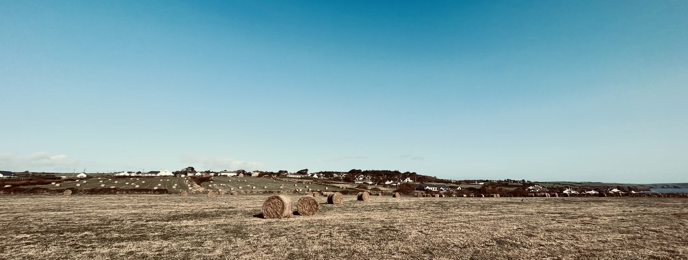
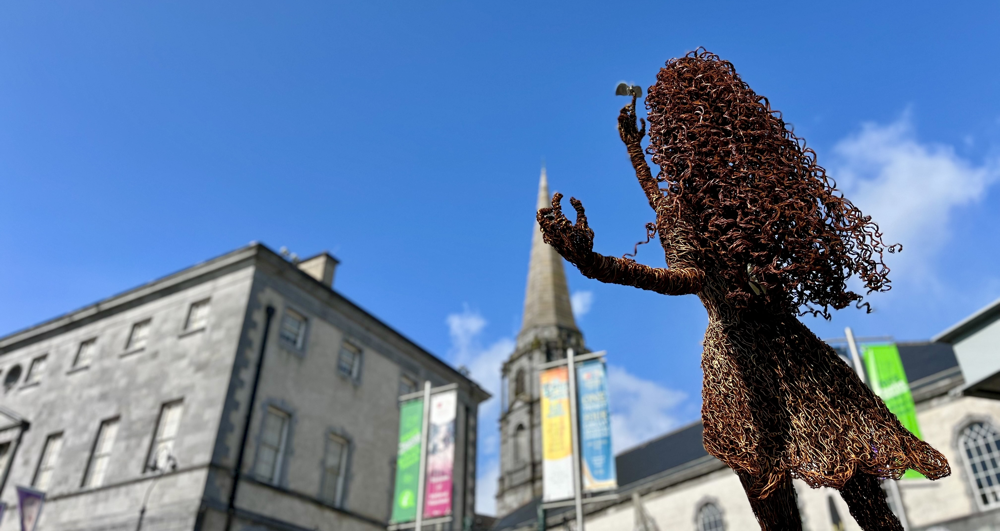
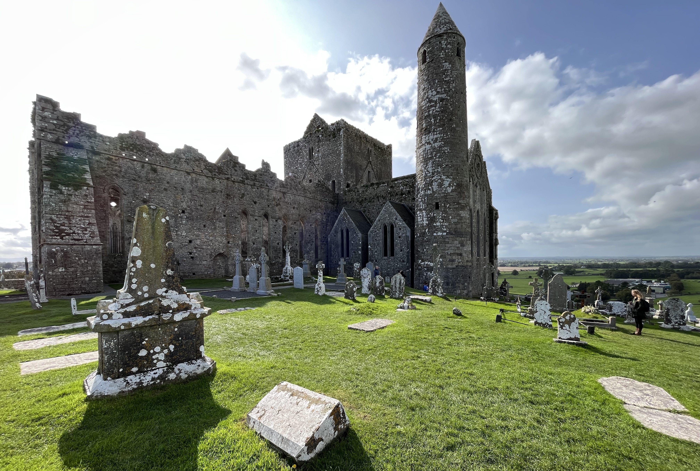
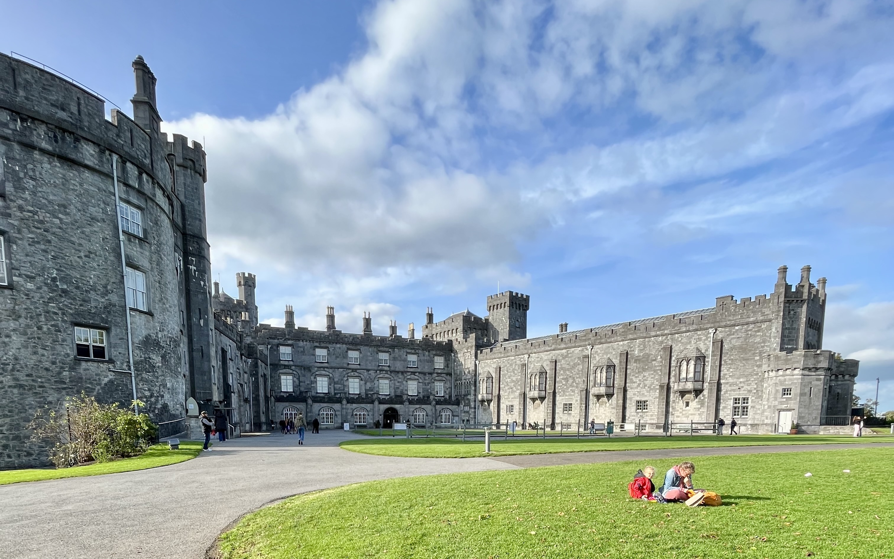
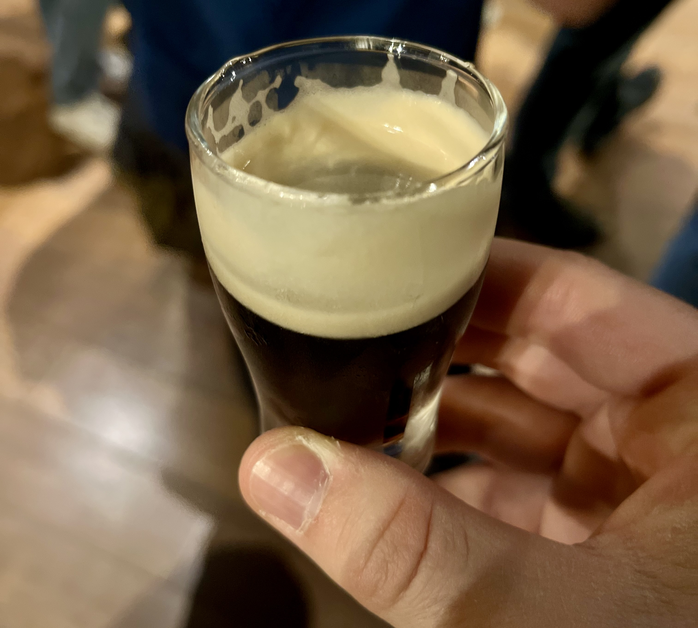

Irsko září 2023

Tak tahle cesta přišla naprosto nečekaně!
Jednou v létě jsem se vrátil z práce domů. Ještě jsem ani nezavřel dveře od bytu, když v tom se mě Klára už ptala, zda bych s ní nechtěl jet na služební cestu do Irska. Znáte mě, cestuji opravdu nerad, takže mi trvalo hodně dlouho, než jsem si odpověď pečlivě rozmyslel a zvážil všechna pro a proti. No, asi po 1 vteřině jsem všechno nadšeně odsouhlasil a začal se těšit na další dobrodružství!
Čím víc se ale termín odjezdu blížil, tím víc jsem si vyčítal, že jsem si odpověď nepromyslel více. A těch důvudů bylo hned několik.
- Musel jsem si vzít další dva dny drahocenné dovolené, které mi do konce roku už moc nescházelo. Další neočekávaný výběr by tak mohl vést k tomu, že Vánoce pro mě nebudou svátky klidu a pohody ale svátky práce.
- Musel jsem se psychicky připravit na to, že v Irsku budu poprvé ve svém životě řídit vlevo.
- I když jsem byl na cestu přizván, postupem času jsem si začal uvědomovat, že hodně věcí musím naplánovat a zařídit. Myslím si, že i to byl jeden z důvodů, proč jsem se jako jediný člověk kvalifikoval do užšího výběru možných Klářiných spolucestujících.
Na druhou stranu jsem se ale těšil, že zase uvidíme něco nového. Před 7 lety jsme byli už v Dublinu a na Mohérských útesech. Tentokrát jsme se ale chystali do Waterfordu, nejstaršího města v Irsku.
DEN 0
Prakticky celý nultý den jsme strávili na cestě.
V 7 hodin jsme se vzbudili v našem oblíbeném hotelu a zašli na snídani do Spojky Karlín. V podniku ani jeden z nás ještě nikdy nebyl, proto jsme moc nevěděli, co čekat. Oba jsme nicméně ochutnali tip šéfkuchaře v podobě shakshuky se sázeným vejcem, nakládanou zeleninou a chlebem. Talíř byl tak plný, že jsem nevěděl, co jíst dřív. Upřímně jsem si ale moc pochutnal. Navíc se mi líbil i podnik samotný, který je zaplněný exotickými rostlinami, takže člověk má pocit, jakoby jedl v deštném pralese. Sečteno podtrženo - příště bych šel do Spojky klidně znovu!
Po snídani jsme si sbalili věci a přesunuli se na letiště. Následoval poklidný let do Dublinu, který trval cca 2,5 hodiny.
Na letišti jsme si dali oběd, v autopůjčovně Hertz jsme vyzvedli malé autíčko Kia Picanto a vyrazili na cestu. Naším cílem byl Waterford, malé městečko s cca 50.000 obyvateli na jihovýchodě Irska. I když píši “malé městečko”, jedná se o 5. největší město v Irsku, které je významné hlavně tím, že jej založili Vikingové jako jedno z prvních na celém ostrově! V dnešní době je Waterford slavný díky výrobě křišťálu a, i když se nejedná významnou evropskou metropoli, nachází se v něm univerzita a pobočka Red Hatu.
Z řízení vlevo jsem měl docela respekt. Už před cestou jsem se dlouho rozmýšlel, zda si auto vůbec půjčovat, nebo se raději po Irsku přepravovat prostředky veřejné dopravy. Několik článků na internetu mě ale nakonec přesvědčilo o tom, že se není čeho bát, a tak jsem se rozhodl vystoupit ze své komfortní zóny a jít do toho! Překvapení ale přišlo hned při nástupu do auta. S Klárou jsme šli každý automaticky na “svoji stranu”, takže když jsme otevřeli ve stejnou chvíli dveře, k našemu překvapení jsme zjistili, že volant je skutečně na pravé straně! Situaci jsme se oba zasmáli, obešli jsme vozidlo a nastoupili druhými dveřmi. Co se týče řízení, na opačné straně je pouze řadící páka a palubní počítač, jinak vše zůstává na svém místě, tím myslím pedály a páky pod volantem. Z pedálů jsem měl asi největší strach. To byla i jedna z věcí, kterou jsem hledal už před odletem. Pokud by pořadí pedálů bylo zrcadlově k tomu, na co jsem zvyklý, na řízení v Irsku bych si netroufl. Jinak mi ale přišlo, že jsem si na řízení zvykl poměrně rychle. Občas mě to v rámci pruhu tlačilo více k levé čáře, takže jsem na ni často najížděl a jednou jsem vjel do protisměru. To se ale naštěstí stalo až u vjezdu na hotelové parkoviště, kde nikdo nebyl. Mohl jsem si tím pádem v klidu od závory vycouvat a najet do druhého pruhu. Když uvážím, že to bylo vše, s čím jsem bojoval, řekl bych, že jsem si na řízení vlevo zvykl mnohem rychleji, než jsem čekal!
Po vybalení věcí na hotelu jsme šli na večeři do restaurace Geoff’s, typické irské hospody, která má ve Waterfordu svoje jméno. V průběhu večera se k nám připojil Klářin kolega Mike, který si dal jedno pivo a potom nás doprovodil do hotelu.
Unavení po dlouhé cestě jsme šli spát relativně brzo.
DEN 1 - 3
Myslím si, že není třeba se o dnech strávených ve Waterfordu moc rozepisovat. Každý z nich totiž probíhal víceméně ve stejném duchu.
- 7:00 - Budíček.
- 7:30 - Snídaně na hotelu.
- 8:30 - Společně s Klárou a jejími kolegy Mikem a Stellou jsme nasedli do auta a já je odvezl na jednání do Red Hatu.
- 9:30 - Práce na hotelu.
- 12:30 - Oběd. Buď v hotelové restauraci, nebo někde ve městě.
- 13:30 - Káva v kavárně. Ve 2 ze 3 případů se jednalo o kavárnu Code Coffee.
- 14:00 - Práce na hotelu.
- 17:00 - Nasedl jsem do auta a jel jsem do Red Hatu vyzvednout ty stejné draky, které jsem tam ráno nechal.
- 18:00 - Práce na hotelu.
- 19:30 - Večeře ve městě.
- 21:00 - Návrat na hotel.
- 22:00 - Noční klid.

Socha před muzeem Waterford Treasures: Bishop’s Palace.
Asi jediné vzrušení nastalo druhý den. Podle předpovědi měla ve městě udeřit nějaká bouře. Ráno sice pršelo, ale nějakou velkou apokalypsu jsem nezaznamenal. Opačného názoru ale bylo pár amerických kolegů z Red Hatu, kterým se ráno nepodařilo objednat taxíka a navíc říkali, že déšť byl noci “wild”. Říkal jsem si, že já nic v noci neslyšel a ano, venku prší, ale “wild” mi to teda nepřijde.
Cestou z Red Hatu zpět na hotel jsem ale začal být bouři věnovat větší pozornost. To jsem totiž z rádia zjistil, že bouře, která se k Waterfordu blíží, má dokonce jméno a navíc podle předpovědi může způsobit záplavy a značné škody na majetku. Když jsem proto přijel zpět na hotel, byl jsem rád, že jsem v suchu. Po zbytek dne pršelo a foukal silný vítr. Kromě toho se ale naštěstí nic významného nestalo. Druhý den jsme si pouze všimli, že stoupla hladina řeky, u které se nacházel náš hotel. Řeka se ale nevylila a navíc vysvitlo sluníčko, takže další den už si na déšť nikdo ani nevzpomněl.
DEN 4
Na čtvrtý den byl naplánovaný přesun z Waterfordu do Dublinu s několika zastávkami.
Hned na tu první jsme si museli trošku zajet. Přibližně 20 km jižně od Waterfordu se totiž nachází malé městečko Dunmore East, ve kterém začíná asi 20 km dlouhý a přesto nenáročný hike Dunmore East Cliff Walk vedoucí po útesech jižního pobřeží. Přestože předchozí dny pršelo, ten den nám počasí vyšlo náramně, a tak jsme si řekli, že uvidíme, kam dojdeme a až nás to přestane bavit, otočíme se a vrátíme se k autu. Bohužel nás to přestalo bavit hodně rychle. Podle mě jsme po útesech neušli ani kilometr, když jsme zjistili, že dál to nemá smysl. Klára měla boty na podpatku, já zase plátěné Vansky a cesta byla po deštích plná bláta a kaluží. Výhledy byly moc pěkné, ale my prostě neměli vhodné oblečení a obutí. Udělali jsme si proto několik fotek útesů, u auta jsme si pořádně očištili boty v husté zelené trávě a vyrazili dál.
Následovala zastávka na oběd a 1,5 hodiny dlouhá cesta přes irský venkov, kde jsem se necítil úplně nejlépe. Mezi vesničkami se totiž klikatila hodně úzká cesta, kterou navíc lemovaly vysoké kamenné zdi, takže do zatáček nebylo vůbec vidět. Maximální povolená rychlost sice byla 80 km/h, já jsem to ale nijak nekalil a před každou zatáčkou jsem se modlil, aby se za ní neobjevil nějaký cyklista.
Po dobrodružné cestě jsme dojeli do městečka Cashel. V něm se nachází hrad Rock of Cashel, nebo spíš to, co z hradu zbylo. Součástí celého komplexu je katedrála, kaple a pravděpodobně nějvětší dominanta hradu - kruhová věž. Přestože se jedná spíše o ruiny, hrad působí velice monumentálně a zpětně musím říct, že se jednalo pravděpodobně o největší highlight našeho pobytu.

Z městečka Cashel jsme zamířili dál na severo-východ, a to do Kilkenny. Auto jsme nechali kousek od centra města a šli se podívat do zdejšího hradu. Prohlídka historických komnat nezabrala ani 30 minut, ale i tak si myslím, že to stálo za návštěvu. Historická památka v centru města vypadá společně s rozsáhlými zahradami jako z pohádky. A tento názor se mnou budou pravděpodobně sdílet i dva manželské páry, které si v době naší návštavy vybraly objekt pro své novomanželské focení!

Po prohlídce hradu jsme navštívili ještě dvě katedrály, konkrétně katedrálu St. Marry a katedrálu St. Canice. Poté jsme už ale nasedli do auta a jeli do Dublinu. Na místním letišti jsme nechali auto a potom se taxíkem přesunuli do hotelu v centru města.
Po dlouhém dni jsme už ani neměli sílu jít nikam na večeři, a tak jsme si šli brzo lehnout.
DEN 5
V den, který jsme chtěli věnovat prohlídce Dublinu, nám počasí vůbec nepřálo. O to víc nás ale potěšila luxusní á la carte snídaně v hotelové restauraci. Oba jsme vyzkoušeli avokádový toast s vejcem a byla to pecka!
Kvůli vydatnému dešti jsme po snídani nasedli do taxíku a přesunuli se na druhou stranu města, konkrétně do skladu piva Guinness. Tam jsme absolvovali cca 1,5 hodiny dlouhou prohlídku věnovanou výrobě piva a historii značky Guinness. Přestože černé pivo moc v oblibě nemám a prohlídka mě na první dobrou vůbec nelákala (před 7 lety jsme ji záměrně vynechali), nakonec jsem byl rád, že jsme ji absolvovali. V přízemí sedmipodlažní budovy byly představeny čtyři ingredience piva, konkrétně voda, ječmen, chmel a kvasnice, a zakladatel pivovaru, pan Arthur Guinness. Další patra byla věnována reklamě značky Guinness, výrobě sudů a degustaci. Prohlídka byla zakončena v Gravity Baru v sedmém patře budovy. Tam jsem si dal jedno svoje světlé pivo v ceně vstupného a po Kláře jsem potom dopil jejího Guinnesse. Nebudu nikomu nic nalhávat, nebylo ještě ani poledne a já jsem už cítil, že nejsem úplně fresh.

Při degustaci piva Guinness jsme se dozvěděli, že pivo nemá černou, ale červenou barvu!
Po dopití piva jsme se ale naštěstí přesunuli do restauračního patra na oběd. Ten už neobsahoval žádný alkohol, ale pořádný flák masa s hranolky. Po jídle přišla do restaurace živá kapela, která společně se stepaři stepujícími na stolech hodně pozvedla atmosféru v celém podniku! V restauraci bylo plno, všichni tleskali a dobře se bavili. Takto si představuji, že někdy bude vypadat vystoupení kapely cavyky!
Po jídle jsme se přesunuli zpět do centra města, kde jsme zašli na kávu a zákusek v These Hands Coffee. Poté jsme se prošli po nákupní ulici Grafton Street. Přes centrum města jsme pokračovali dál do známé čtvrti Temple Bar, odkud jsme se dostali až k dublinskému zámku. Od něj jsme zamířili do katedrály sv. Patrika, kde jsme absolvovali krátkou prohlídku.
Protože jsme cestou docela vymrzli, vrátili jsme se zpět do centra, kde jsme si dali čaj/horkou čokoládu ve slavné francouzské cukrárně Ladurée. Když jsme dopili, bylo už relativně pozdě, takže se rozhodli jít na hotel, kde jsme zapli Netflix a zbytek večera strávili u nové řady seriálu Love Is Blind.
DEN 6
Hurá domů!
DOJMY Z IRSKA
- Lidé na mě působili až nezvykle mile. Níže dám několik příkladů. 👇
- V kavárně Code Coffee si paní pamatovala moji objednávku z předchozího dne. V podniku jsem byl celkem 2x. ☕
- V nejedné restauraci se mi stalo, že když jsem si objednal jídlo bez pití, obsluha mi sama od sebe nabídla sklenici vody zdarma. 🚰
- V jiné restauraci se nám stalo, že jsme se spletli při objednávce jídla, takže jsme si objednali něco, co jsme nechtěli, naneštěstí zrovna humra, který byl nějdražším jídlem na jídelním lístku. Pán nám sice jídlo nevyměnil, ale při placení nám dal slevu 10 EUR na celou objednávku. 🦞
- V jednom městě jsme potřebovali zaplatit parkování v parkovacím automatu. Bohužel v něm ale nefungoval platební terminál a my neměli hotovost. Paní v důchodovém věku, která stála v řadě před námi se nabídla, že nám parkování v hodnotě 1 eura zaplatí. Vtipné bylo, že parkování zaplatila už i pánovi před námi, který řešil stejný problém jako my! 🅿️
- Řidiči se chovají velice ohleduplně. Na silnicích mi pořád někdo dával přednost a pouštěl mě i v místech, kde vůbec nemusel. Všichni mi navíc děkovali, když jsem udělal to samé já jim. 🙏
- Na řízení vlevo se dalo poměrně rychle zvyknout. 👈
- Sychravé počasí, tmavé hospody a omšelé domy ve mě nevyvolávaly ty nejlepší pocity. Do irských měst bych se proto už vracet nemusel. 🌫️
- Každému milovníkovi i nemilovníkovi piva bych návštěvu Guinness Storehouse doporučil. Prohlídka mě příjemně překvapila! 🍺